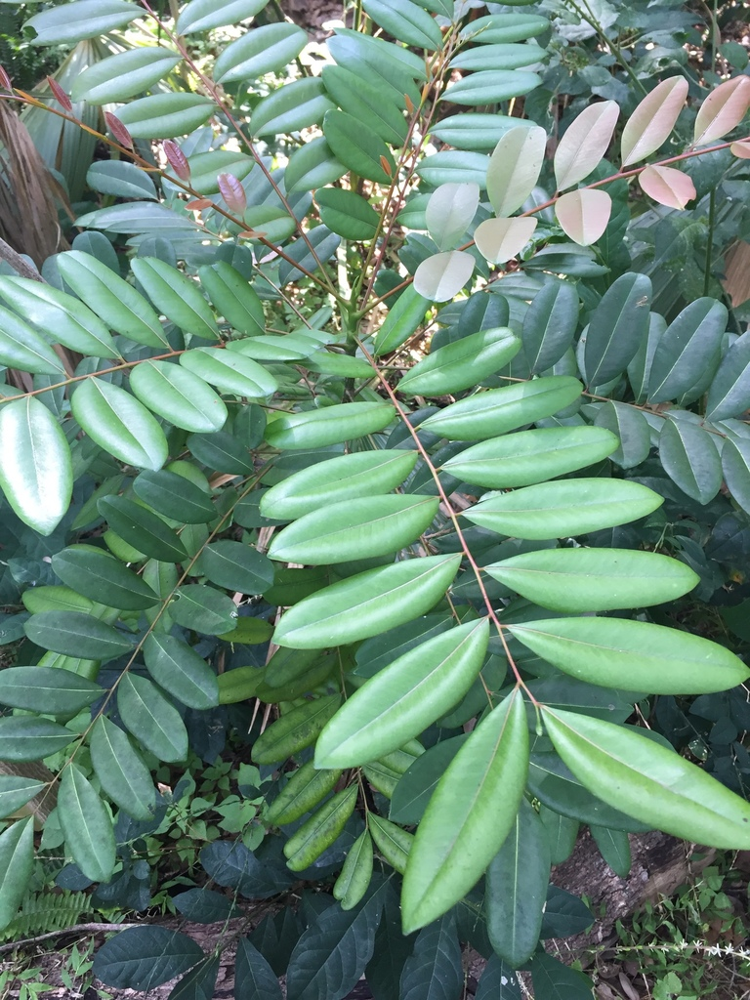
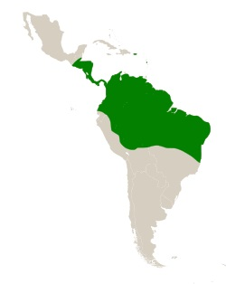

Son árboles o arbustos, que alcanzan un tamaño de 3–30 m de alto, prospera en laderas y en sitios planos, crece relativamente rápido en sitios desmontados y el desarrollo de la planta se da mejor en los suelos más profundos, con pH ácido a neutro o alcalino, la planta prefiere suelos arenosos para crecer mejor.
Se extiende desde el sur de México (Yucatán), Centro América, bosques tropicales secos de Panamá y parte norte de América del Sur, así como en las islas del Caribe: Cuba, Haití, Jamaica.
Usos Medicinales:

Contra-indicaciones:
No hay ninguna contra-indicacion.
